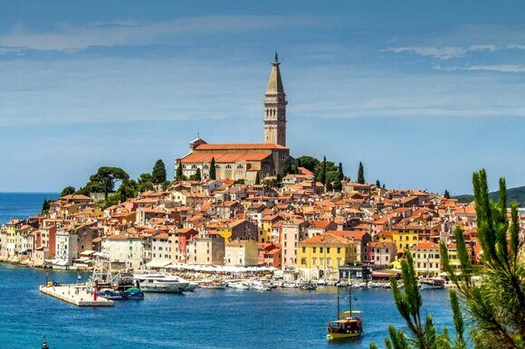

« Назад
Правила въезда в Хорватию для россиян в 2025 году

Хорватия всегда была одним из привлекательнейших направлений для российских туристов. В 2025 году, несмотря на геополитические изменения и санкционные меры, страна продолжает радушно принимать гостей из России. Однако изменения в финансовых системах и особенности визовой политики требуют дополнительной подготовки перед поездкой. В данной статье мы подробно рассмотрим актуальные требования и рекомендации для граждан России, планирующих посетить Хорватию в 2025 году.
Современные реалии путешествий диктуют необходимость тщательного планирования и подготовки документов. В связи с санкционными ограничениями, российские банковские карты перестали работать в хорватских банкоматах и точках оплаты, что требует от туристов наличия альтернативных способов получения средств.
В данной статье мы разберем все этапы подготовки к поездке: от выбора типа загранпаспорта до покупки авиабилетов, оформления визовых документов и особенностей путешествия с детьми или животными. Приведенные рекомендации помогут избежать возможных сложностей и сделать поездку максимально комфортной, несмотря на изменения в международном банковском обслуживании.
Особое внимание уделяется нюансам, связанным с оформлением виз, подачи документов и правилам въезда как для индивидуальных туристов, так и для семей с детьми или владельцев домашних животных. Подробные инструкции, списки необходимых документов, советы по поведению в стране и рекомендации по мобильной связи помогут каждому путешественнику извлечь максимум удовольствия из пребывания в Хорватии.
Тип загранпаспорта: старого образца или биометрический
С учетом современных требований пограничного контроля и безопасности, особое значение приобретает выбор типа загранпаспорта. В 2025 году граждане России могут выбирать между паспортами старого образца и биометрическими паспортами.
Биометрический паспорт – это современный документ, содержащий встроенный микрочип, на котором хранятся персональные данные владельца, включая фотографию, отпечатки пальцев, сведения о гражданстве и другие биометрические параметры. Именно этот тип паспорта имеет все преимущества современного контроля и является рекомендуемым для поездок в зарубежные страны, особенно в Евросоюз, куда входят государства, сотрудничающие с Хорватией.
Старый образец паспорта, хоть и остается действительным, имеет ограниченные возможности в части автоматизированного контроля на границе. В частности, использование паспорта старого образца может привести к увеличению времени проверки документов и возможным недоразумениям при пересечении границы. Поэтому туристам советуют обновлять свои документы, рекомендуется обратиться за биометрическим паспортом заблаговременно.
Как оформить загранпаспорт
Оформление загранпаспорта требует понимания четкого алгоритма работы с госорганами, сбором необходимых документов и соблюдения установленных сроков. Ниже приведена пошаговая инструкция и список документов для получения биометрического паспорта.
Алгоритм оформления:
Подготовка заявления
Заполните специальную форму заявления, которая доступна в отделениях многофункциональных центров (МФЦ) либо через сайт Госуслуги.
- Сбор необходимых документов
Необходимо иметь паспорт гражданина РФ, две цветные фотографии установленного образца, квитанцию об оплате госпошлины, свидетельство о рождении (для несовершеннолетних) и, в зависимости от ситуации, справку о наличии прописки.
- Личная явка
После подачи заявления необходимо лично явиться в офис для сдачи биометрических данных (отпечатков и фотографии). Запись на приём производится заранее.
- Ожидание изготовления
Изготовление паспорта занимает от 10 до 30 рабочих дней. Рекомендуется подавать документы за 2–3 месяца до запланированной поездки.
- Получение паспорта
После изготовления вы получите уведомление о готовности, и сможете забрать документ лично.
Рекомендации:
- Заблаговременно проверьте актуальность списка документов – с течением времени требования могут меняться.
- Советуем внимательно отнестись к заполнению анкеты и проверке всех данных для сокращения времени обработки.
- При необходимости воспользуйтесь услугами специализированных центров, которые помогают с подготовкой документов.
Визовые требования для граждан России
Хорватия является страной, которая за последние годы претерпела изменения в визовой политике, адаптируя свои требования к современным реалиям международных отношений. Для граждан России в 2025 году стандартным требованием остается оформление шенгенской визы до поездки.
Основные визовые требования включают:
- Наличие действующего загранпаспорта с минимум шестимесячным сроком действия.
- Подтверждение наличия обратного билета или маршрута дальнейшего путешествия.
- Доказательства наличия достаточных финансовых средств. В нынешних условиях, когда банковские карты не работают, потребуется наличие достаточной суммы наличных средств.
- Медицинскую страховку, покрывающую весь период пребывания в стране.
- Подтверждение бронирования отеля или приглашения от гостей (в зависимости от типа визы).
Шенгенская виза и как ее оформить
Для граждан России требуется шенгенская виза, выданная любой страной-членом Шенгенской зоны. С 1 января 2023 года Хорватия стала участником Шенгенской зоны и начала оформлять шенгенские визы для россиян. Национальные визы, полученные до 31 декабря 2022 года, продолжают действовать до истечения их срока, однако в их рамках разрешено въезжать исключительно в Хорватию.
Подача заявлений на получение хорватской шенгенской визы осуществляется через визовые центры VFS Global, расположенные в Москве, Санкт-Петербурге, Калининграде и других городах.
Набор документов, необходимых для всех заявителей, включает:
- Анкета, которую необходимо заполнить на официальном сайте crovisa.mvep.hr, распечатать и подписать. При этом сотруднику визового центра может понадобиться пин-код от заполненной онлайн-анкеты.
- Две цветные фотографии размером 35 × 45 мм. Требования к фотографиям можно найти на сайте визового центра.
- Загранпаспорт, который должен быть действителен как минимум еще три месяца после предполагаемой даты выезда из Шенгенской зоны; в паспорте должно быть как минимум две свободные страницы.
- Копия первой страницы загранпаспорта с личными данными, а также копии всех виз, полученных за последние три года. Если визы вклеены в другой загранпаспорт или в паспорты, которые аннулированы, нужно предоставить копии первых страниц соответствующих документов.
- Копия внутреннего паспорта, содержащая все страницы с отметками.
- Медицинская страховка с минимальным покрытием в 30 000 €, действующая во всех странах-участницах Шенгенского соглашения в течение всего срока пребывания. Для оформления страховки российская страховая компания должна сотрудничать с европейскими партнерами; как это проверить, уточняется дополнительно.
- Подтверждение наличия работы и достаточных средств для поездки. Так, работающие граждане должны предоставить справку с места работы вместе с выпиской из банка за последние три месяца, отражающей движение средств. Для самозанятых нужны справка о доходах с сайта ФНС за последние шесть месяцев или год, заверенная электронной печатью, и выписка из банка с движением средств за последние шесть месяцев. Подробная таблица с вариантами представления документов доступна на сайте визового центра.
- Билеты в обе стороны на самолет, поезд или автобус. Если предоставляется бронь, оплату билетов оплачивать не требуется.
- Подтверждение бронирования отеля или туристический ваучер. При выборе проживания в частном секторе необходимо предоставить подтверждение бронирования и копию документа “Resenje o delatnosti”, свидетельствующего о разрешении сдачи жилья в аренду.
- Для заявителей старше 18 лет потребуется выписка из фонда пенсионного и социального страхования за последние 10 лет, в которой отражены сведения о трудовой деятельности. Этот документ должен быть подписан электронной подписью.
- Согласие на обработку персональных данных.
При обращении в визовый центр также проходят процедуру биометрической регистрации – делают цифровую фотографию и снимают отпечатки пальцев. При этом дети до 12 лет освобождены от сдачи отпечатков, однако их присутствие обязательно для получения фото.
Туристы старше 12 лет обязаны оплатить консульский сбор в размере 90 €. Кроме того, заявители всех возрастов должны уплатить сервисный сбор в размере 28,5 € и логистический сбор – 6,5 €.
Причины отказа во въезде
Несмотря на тщательную подготовку, могут возникнуть ситуации, когда въезд в Хорватию будет отклонен. Основными причинами отказа являются:
- Неполный или неверно оформленный пакет документов, что может затруднить проверку личности и цели поездки.
- Отсутствие достаточных финансовых средств, особенно учитывая невозможность использования банковских карт.
- Несоответствие требованиям медицинского страхования.
- Предыдущие нарушения миграционного законодательства или фиктивные цели визита.
- Пограничный контроль может отказать в визе при наличии вопросов относительно цели визита или недостаточного подтверждения маршрута.
Эти причины особенно важны в условиях санкций – консульские службы могут быть строго настроены в вопросах документации и подтверждения финансовой состоятельности.
Основные правила въезда в Хорватию
Въезд в Хорватию регулируется четкими правилами, направленными на поддержание безопасности и упрощение процесса проверки документов. Основные правила следующие:
- Обязательное наличие действующей визы или альтернативного разрешения для въезда.
- Загранпаспорт должен иметь срок действия не менее шести месяцев.
- Наличие подтвержденного маршрута поездки, включая билеты на обратный рейс.
- Обязательное медицинское страхование, покрывающее период пребывания.
- Туристы обязаны иметь подтверждение наличия достаточных наличных средств для покрытия расходов в стране, учитывая отказ от использования банковских карт.
- При въезде возможно досмотр багажа и личных вещей, поэтому рекомендуется не возить запрещенные к ввозу предметы.
Соблюдение данных правил является обязательным для избежания проблем на границе.
Что нужно для въезда в Хорватию с ребенком
Путешествие в Хорватию с детьми требует дополнительной подготовки и соблюдения ряда специальных требований. Основные моменты, о которых следует помнить:
- Для детей необходимо оформить отдельный загранпаспорт, на который также должны быть внесены биометрические данные.
- При подаче заявления на визу нужно предоставить свидетельство о рождении ребенка, подтверждающее родственные связи с сопровождающим лицом.
- Если один из родителей не сопровождает ребенка, потребуется нотариально заверенное согласие на выезд, оформленное в двух экземплярах.
- Бронирование отеля или приглашение должно содержать информацию о размещении с учетом возраста и нужд ребенка.
- Рекомендуется иметь медицинскую страховку, которая покрывает не только взрослого, но и ребёнка на время пребывания в стране.
Соблюдение этих правил гарантирует, что путешествие с ребенком пройдет гладко и без дополнительных вопросов со стороны пограничных служб.
Что нужно для въезда в Хорватию с животным
Приезд в Хорватию с домашним животным – актуальный вопрос для владельцев питомцев. Процедура оформления въезда с животным включает несколько обязательных шагов:
- Предварительно проверьте, разрешается ли ввоз вашего вида животного в Хорватию. Некоторые породы и виды могут подпадать под специальные ограничения.
- Обязательно наличие международного ветеринарного паспорта с записями о прививках, в частности против бешенства. Прививка должна быть сделана не менее чем за 21 день до поездки.
- Перед поездкой требуется проведение ряда анализов и проверок, подтверждающих состояние здоровья животного.
- Рекомендуется оформить специализированную страховку для животного, чтобы покрыть возможные непредвиденные расходы в случае болезни или травмы.
- При покупке билетов обратитесь к авиакомпании за информацией о перевозке животных – необходимо уточнить, как и в каком виде можно оформить перевозку питомца в салоне или багажном отделении.
Подготовка документов для животного и соблюдение всех предварительных требований помогут избежать проблем при пересечении границы и сделать путешествие комфортным для вас и вашего питомца.
Возможные проблемы при поездке в Хорватию
Несмотря на удобство прямых рейсов и подробное оформление всех документов, путешественники могут столкнуться с рядом проблем во время поездки:
- Финансовые сложности
Из-за санкций российские банковские карты не работают, что требует от туристов подготовки значительных сумм наличных. Это может создать риск безопасности, особенно в общественных местах.
- Проблемы с документами
Неправильное оформление или неполный пакет документов может привести к задержке или отказу на границе. Здесь важно уделить внимание каждой детали ещё до выезда.
- Языковой барьер
Несмотря на то, что многие жители туристических зон говорят на английском, знание хотя бы базовых фраз на хорватском языке может существенно облегчить процесс коммуникации с местными жителями.
- Изменения в расписании рейсов
Несмотря на наличие прямых рейсов, погодные условия или оперативные изменения могут повлиять на расписание, в том числе на пересадку в аэропортах.
- Медицинские риски
Наличие лекарств, необходимых для здоровья, особенно если вы путешествуете с детьми или пожилыми членами семьи, должно быть заранее обеспечено. Наличие рецептов и подтверждений от медицинских учреждений поможет избежать проблем при пересечении границы.
Тщательная подготовка и резервные планы позволяют избежать ряда этих проблем и сделать поездку максимально комфортной.
Перелет: выбор авиакомпании и покупка билетов
В 2025 году прямые рейсы в Загреб из Москвы, Санкт-Петербурга, Иркутска и Сочи позволяют рационально распланировать перелет. При выборе авиакомпании и бронировании билетов стоит учитывать следующие аспекты:
- Репутация авиакомпании
Изучите отзывы пассажиров, рейтинги и статистику пунктуальности. Так как банкoвские карты не работают, важно, чтобы в случае перепланировки рейса вы могли оперативно оплатить дополнительные сборы наличными или через альтернативные системы.
- Стоимость билетов
В условиях санкций многие авиакомпании предлагают специальные тарифы для российских туристов, однако цены могут варьироваться в зависимости от сезона и загруженности рейсов.
- Удобство расписания
Подберите рейс, который соответствует вашему плану поездки, учитывая время на оформление всех необходимых документов по прибытии в страну.
- Дополнительные услуги
Обратите внимание на правила перевозки багажа, возможность перевозки домашних животных, а также наличие сервисов, позволяющих оплатить дополнительные услуги без использования банковских карт.
Покупая билеты, заранее уточните условия возврата и возможность изменения даты, чтобы избежать непредвиденных расходов в случае изменений планов.
Культурные особенности и обычаи Хорватии
Знакомство с культурой и обычаями страны значительно смягчает процесс адаптации туриста. Хорватия — страна с богатой историей, которая сочетает европейскую традиционность и современные тенденции. При посещении Хорватии стоит учитывать следующие особенности:
- Приветствие и манеры поведения
Хорваты ценят вежливость, уважительное отношение к старшим и готовность поддерживать диалог. При встрече принято здороваться, используя формальные обращения.
- Религиозные традиции
В стране преобладают традиционные европейские христианские обычаи. Посещение церквей требует скромного наряда, а фотофиксация внутри святых мест не поощряется.
- Кулинарные традиции
Хорватская кухня знаменита морепродуктами, оливковым маслом, свежими овощами и местными винами. Рекомендуется посетить традиционные рестораны, при этом соблюдая местные обычаи за столом.
Транспорт и мобильная связь в Хорватии
Для туристов, прибывающих в Хорватию, важным аспектом является организация передвижения внутри страны и возможность оставаться на связи.
Транспорт:
- Общественный транспорт в крупных городах, таких как Загреб, Сплит или Риека, представлен современными автобусными маршрутами, трамваями и пригородными поездами. Расписание транспорта достаточно стабильное, однако в туристический сезон возможны дополнительные рейсы.
- Аренда автомобиля – отличный вариант для самостоятельных исследований живописных уголков Хорватии. Рекомендуется заранее проверить условия аренды и убедиться, что у вас есть международное водительское удостоверение.
- Междугородние рейсы и паромы позволяют легко добраться до отдаленных регионов, особенно если планируется посещение многочисленных островов вдоль побережья Адриатики.
Мобильная связь:
- В условиях санкционного режима необходимо заранее позаботиться о средствах связи. Рекомендуется приобрести местную сим-карту сразу после прибытия в страну, поскольку использование российских операторов может быть ограничено.
- Основные операторы Хорватии предоставляют широкий спектр тарифов, среди которых найдется и дневной, и туристический вариант с большим количеством трафика и минут.
- Помимо мобильной связи, доступ к интернету можно получить через Wi-Fi – во многих отелях, кафе и общественных местах сеть доступна, что позволяет туристам оставаться на связи и оперативно информироваться о маршрутах и местных новостях.
Безопасность: советы для путешественников
Хорватия традиционно считается безопасной страной, однако соблюдение определенных мер предосторожности поможет избежать неприятностей:
- Личные вещи
Всегда следите за своими документами и наличными средствами. В туристических местах возможны мелкие кражи, поэтому пользуйтесь сумками с застежками и не оставляйте ценные вещи без присмотра.
- Уличная безопасность
Избегайте тихих и малоосвещенных улиц поздно вечером, особенно в незнакомых районах. Соблюдение обычных мер ответственности поможет сохранить ваше имущество в безопасности.
- Финансовые операции
В условиях отсутствия работы российских банковских карт рекомендуется хранить наличные деньги в двух местах — часть средств в кошельке, а оставшуюся сумму в сейфе отеля.
- Контакты с местными
При возникновении проблем обращайтесь в местные туристические информационные центры или полицию. Контактные телефоны экстренных служб всегда можно найти в номере отеля или на информационных стендах.
Медицинское обслуживание: что нужно знать
Путешествуя в Хорватию, следует обратить внимание на несколько аспектов медицинского обслуживания:
- Страховка
Медицинская страховка является обязательным требованием при въезде. Она должна покрывать весь срок пребывания и обеспечивать доступ к экстренной медицинской помощи.
- Аптечка первой помощи
Рекомендуется иметь при себе базовый набор медикаментов: обезболивающие, препараты от простуды, средства для перевязок и необходимые личные лекарства. Важно сохранить рецепты или документы, подтверждающие необходимость приема определенных медикаментов.
- Местные клиники
В крупных городах имеются хорошо оснащенные клиники, однако в отдаленных районах медицинская помощь может быть ограниченной. Планируя поездку, заранее уточните адреса ближайших медицинских учреждений.
- Языковой барьер
В экстренных случаях помощь можно получить, однако изучение базовых фраз на хорватском языке может послужить дополнительным подспорьем при общении с медицинским персоналом.
Рекомендации и советы
Учитывая особенности въезда и пребывания в Хорватии, приведем практические советы для путешественников:
- Заранее планируйте маршрут
Подготовка детальной программы поможет оптимально распределить время и избежать спешки при пересечении границы.
- Документы и копии
Сделайте копии всех важных документов – паспорт, виза, страховка, бронирование отеля. Рекомендуется хранить копии в электронном виде и на бумаге отдельно от оригиналов.
- Подготовка наличных
Из-за санкций, предусматривающих неработоспособность российских банковских карт, всегда имейте достаточное количество наличной валюты, а также запас иностранной валюты (евро).
- Коммуникация
Изучите базовые фразы на хорватском языке и убедитесь, что ваш мобильный телефон подходит для местных сетей.
- Уточняйте расписание рейсов
Прямые рейсы из Москвы, Санкт-Петербурга, Иркутска и Сочи облегчают организацию перелета, однако следите за изменениями расписания и возможными задержками.
Заключение
Планируя поездку в Хорватию в 2025 году, следует учитывать, что помимо уникальной атмосферы средиземноморских курортов и богатой культурной программы, туристы сталкиваются с рядом нюансов, связанных с санкционными мерами и изменениями в финансовых системах. От выбора загранпаспорта до оформления визы, от организации безопасного передвижения по стране до приобретения билетов на прямые рейсы из крупных городов России — каждая деталь имеет значение.
Соблюдение рекомендованных мер поможет избежать ошибок и сделать путешествие не только безопасным, но и максимально комфортным. Четкое планирование, подготовка необходимых документов, а также внимание к финансовым и коммуникационным аспектам — вот залог успешной поездки. В этом руководстве каждый турист найдет полезную информацию, позволяющую получить полное представление о правилах въезда в Хорватию и особенностях пребывания в стране в современных условиях.
Срочное оформление загранпаспорта и визы в Хорватию – быстро и надежно
Планируете поездку в Хорватию, но сроки поджимают? Паспортно-визовый центр «Север» предлагает срочное оформление загранпаспорта и визы для быстрого и комфортного выезда за границу. Более 25 лет опыта, удобное расположение в самом центре Москвы и профессиональный подход позволяют нам гарантировать оперативное решение даже самых сложных задач.
Мы знаем, как важна каждая минута перед долгожданным путешествием. Наша команда экспертов всегда готова взять на себя все вопросы, связанные с оформлением документов: от подготовки заявки до получения загранпаспорта и визы. Наше главное преимущество – эффективность и индивидуальный подход к каждому клиенту.
Почему выбирают нас? Потому что «Север» – это гарантия надежности и оперативности. Ваше время – наш приоритет, и мы делаем всё, чтобы Вы успели на свой рейс, не теряя ни минуты. Благодарные клиенты доверяют нам оформление документов уже более 25 лет, и мы рады предложить Вам наилучший сервис в Москве.
Не позволяйте бюрократии помешать мечте о путешествии! Позвоните по телефону +79255854195 и убедитесь, что с нами оформление загранпаспорта и визы для Хорватии – это быстро, удобно и выгодно. Ваше идеальное путешествие начинается с грамотного и своевременного решения юридических вопросов – доверьтесь профессионалам «Север»!
|